1 The series: first to four, not a fixed playlist
For the normal two-player format, the first player to win four challenges wins the best-of-seven series. The winner of each challenge chooses the next challenge; the game order is set during play. Stop when someone reaches four. There can be four, five, six or seven played challenges, not seven compulsory games after a clinch. The challenge menu is Shooting, HORSE, 1v1, Backboard, 3 Point, Rim and Bump.
The source log writes L for Liam and O for Owen, in the order of the challenge winners listed. Thus a winner code describes who won each listed game; it is not a list of who picked it. The first picker is unrecorded. All observed series start with Shooting, but that observation does not prove a fixed opening rule. Whether repeats are allowed is unspecified: agree the repeat policy and first-picker procedure before play, rather than assuming either.
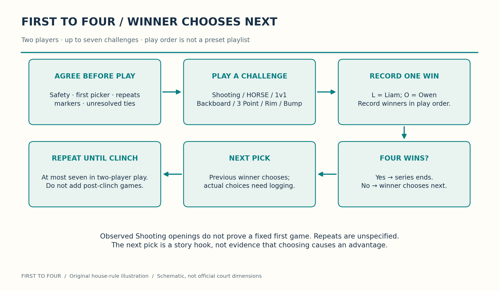
1.1 Rule hierarchy and the pre-play agreement
The numbered game clauses below preserve the supplied zero-based or one-based starts. A safety/consent override always takes priority. An operational interpretation is a practical reading requiring confirmation, not a newly discovered owner rule. An agree before play note identifies a gap in the supplied mechanics. Do not settle such a gap by retroactively choosing the interpretation most favorable to the current leader.
Before starting, select exact court markers, an accessible shooting range, participants, rest arrangements, the first picker, repeat policy, simultaneous finish handling, and any game-specific gaps listed below. Use a clear court with permission to play and film. Check the surface, balls and basket; no participant needs to attempt a jump or distance outside their ability. Pause when conditions or participation change. These preparations do not create a new scoring system.
2 Safety and consent override: real rules above the jokes
Ball-to-ball only in a clear court. Bump’s interference allowance is exclusively ball-to-ball. Do not target or hit any people, including players who are eliminated, resting, or on their phone. No hands or body on an opponent’s ball. Pause for bystanders and any occupied return or rebound lane. If a tactic cannot be separated safely from people, do not attempt it.
Reckless contact stops play. Stop the action, check the people involved, provide appropriate first aid and obtain medical help when needed. Resume only when it is safe and everyone agrees. No scoring dispute outranks care. The old credit-card-for-24-hours/Amazon joke is not an enforceable rule: there is no credit-card sharing, no passwords and no financial access.
Dinner and costume bits are voluntary, mutually agreed opt-in. Nobody owes a purchase or a performance because of a joke. No coerced humiliation; declining a tiara, lipstick, miniskirt, meal, filming or publication creates no competitive penalty. Agreement can be withdrawn without ridicule.
Trash talk needs consent and personal boundaries. Stop when asked. No hate, threats, unwanted personal attacks or encouragement of serious fouls. If participants enjoy YOUR MOM, skill or dating jokes, that permission is local and revocable, not a license to involve other people or expose private information.
2.1 Mercy is an offer, not a debt
Where the game allows unlimited mercy, offers have no fixed numeric cap. The receiver uses the honor system and may reject a mercy if they feel they have already lost. “Out of mercies” below means there are no more accepted or agreed mercy attempts to play, not that an invented universal maximum has been reached. Agree and record what each accepted mercy grants before using it.
Keep the dinner conventions distinct. In Shooting, the person receiving the most mercies usually buys dinner for the loser or losers; this is not strict. HORSE’s version expects the most-mercy recipient to buy dinner for the others, win or lose. Both are jokes subject to voluntary agreement, not a unified payment obligation. Backboard and Rim inherit the Shooting-style mercy/dinner context. The actual log does not record mercy counts or establish anyone’s dinner debt.
3 SHOOTING
Each player has five attempts per shot location. Begin near the basket, then use the free-throw line, three-point line, near logo edge, logo center, half court, far logo center, and so on. “And so on” is supplied, not a complete measured list: agree the exact marks and any later locations on the court.
Advance to the next location when all players have made the current shot. It is one successful shot at each location for each player, not five required makes.
Offer unlimited mercies for the vibes. The receiver should honorably reject an offer if they feel they have lost. The person with the most mercies usually buys dinner for the loser(s), but this is not strict and remains voluntary.
When both players fail at the same location, they may agree mutual mercies in any amount, typically two. Two is a usual choice, not a mandatory cap or an automatic extension awarded without agreement.
HIGH JUMP RULES. After both players are out of mercies, compare the attempts taken at the previous successful shot: the player who made that shot in the fewest attempts wins. This is called HIGH JUMP RULES because both creators competed in high jump; the countback is their owner-supplied house rule. If the previous-shot attempt counts tie, the supplied rules give no further resolution: agree a tie procedure before play. They also do not specify a countback when there is no previous successful shot; agree that case before play.
3.1 What the scorekeeper needs
Record attempts at every shared successful location, not merely the final miss. Keep ordinary attempts and accepted mercies distinguishable, and agree whether mercy attempts enter the countback total; that accounting detail is not supplied. For example, if both fail later and A took one attempt at the previous successful shot while B took three, HIGH JUMP RULES favors A. That is an illustration, not an entry in the historical log. Equal counts do not authorize an invented recursive countback through earlier locations.
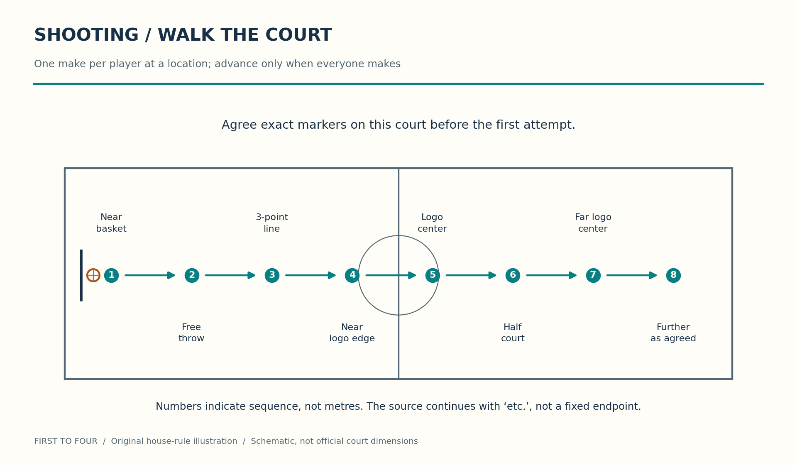
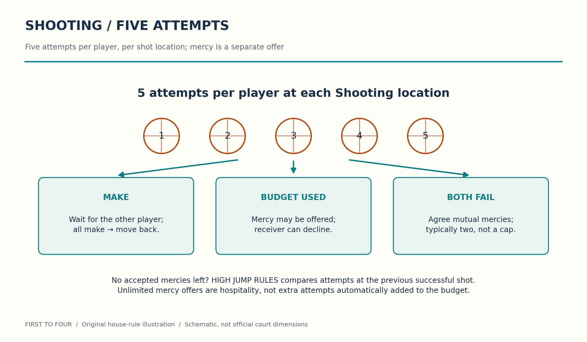
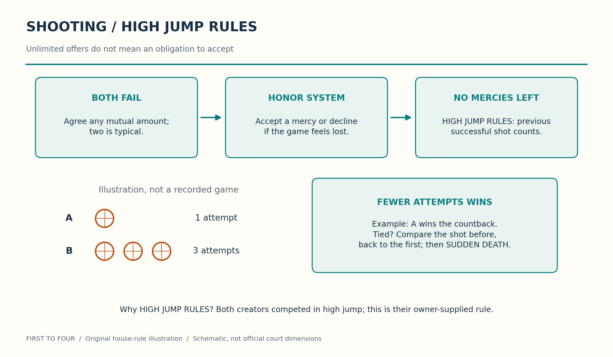
4 HORSE
Determine the order by sudden-death, shot-for-shot shooting at an agreed distance. For more than two players, agree how that shootout establishes the full order.
Set doable trick shots, distances or rebounded jumpers. No weird RUIN THE VIBE shot: do not require a dunk from someone who cannot dunk, involve bystanders or require anything illegal. Announce material parameters before the shot, including location, bounce/rebound requirements and release style.
If the setter misses, the next player gets to set. Continue passing the set until somebody makes a shot.
The other players replicate the successful set’s preannounced parameters. Ambiguity leaves room within reason, not permission to be a WEASILY WESLEY. Clarify disagreements rather than exploiting an unannounced technicality.
A missed replication adds one letter of HORSE to that player’s tally.
Reaching E eliminates that player. The last player remaining wins.
The setter should be generous about mercy when a player faces their final E. The player receiving the most mercies is expected, in the house joke, to buy dinner for the others whether they win or lose. The BAD VIBES BETTY tiara, purple lipstick and miniskirt-for-dinner bit is an optional costume joke, not a punishment. Every meal and costume choice is voluntary, mutually agreed opt-in; no coerced humiliation, and declining has no game penalty.
4.1 Letter states, not basketball points
The states are no letters, H, HO, HOR, HORS and HORSE. A missed set changes who sets; a missed replication changes the replicator’s letter state. Those are not the same event. Agree the setter rotation after everyone finishes replication, the treatment of simultaneously final-E players and the number of attempts granted by a mercy; the supplied rules do not fully specify these details. Historical HORSE strings such as “5-3” remain raw, uninterpreted records here: do not silently decide their letter orientation or reinterpret them as points.
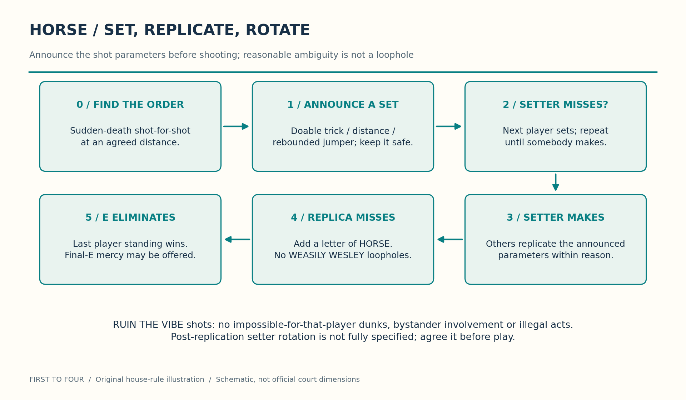
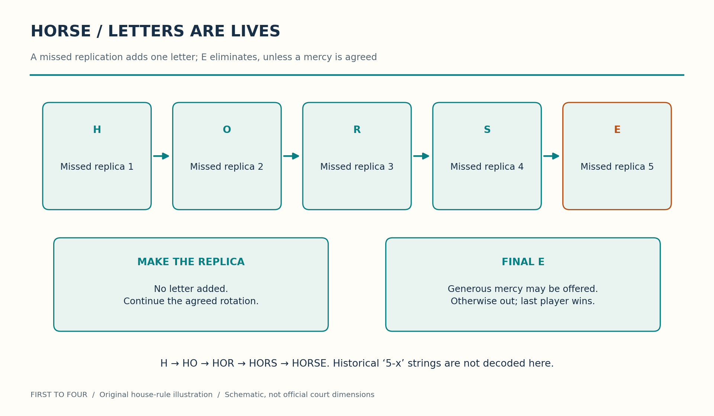
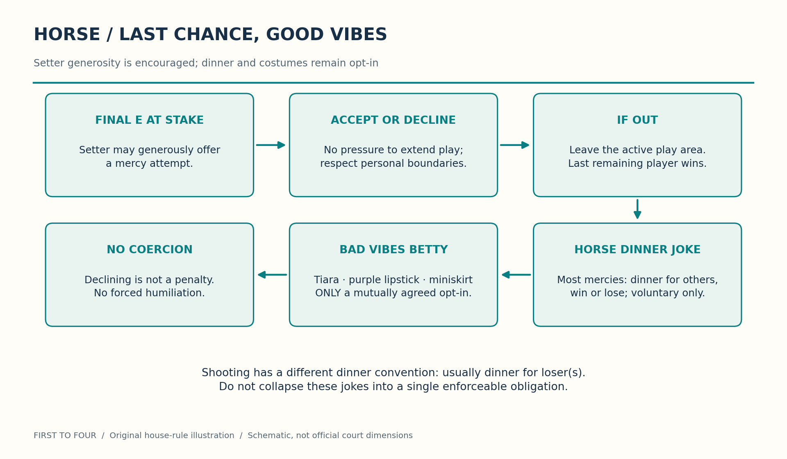
5 1v1
Begin with a sudden-death shootout to determine who starts. With extra players, possible formats are alternating possessions for a predetermined EVEN count, king of the hill with a new player after possession changes, or a four-player tournament. Choose the structure and details before play.
Check the ball respectfully by passing it back and forth before play.
A basket from outside the three-point arc scores two points; inside the arc scores one point. Agree line calls before play.
The first player to reach or exceed seven points wins. More players can agree a higher target. Win by two is not specified; do not add it. A two-point shot can therefore finish a seven-point game at eight.
An offensive foul changes possession. An egregious foul, or repeated less-severe fouls, leads to a one-point free throw under the supplied house rule. Agree shooter and restart administration rather than importing a league rulebook.
A major defensive foul earns a free throw. For a minor defensive foul, IM NOT A BIG OL BABY allows waiving the call, or an extra possession after a turnover if the minor fouls are repeated. Do not use the joke to pressure someone to accept contact or play through injury.
Consensual YOUR MOM, skill and dating trash talk is allowed within personal boundaries. It is not encouragement of serious fouls. Stop when asked; no hate, threats or unwanted involvement of others.
5.1 Possession details that must be agreed
Made-basket possession is unspecified: do not silently assume winner’s outs or loser’s outs. Clearing rules, the player who takes each free throw, free-throw rebound handling and the restart after a free throw are also unspecified. Confirm how the optional extra possession is tracked. All contact remains subject to the safety override; reckless contact stops the game for care, rather than merely being traded for points. For extra-player versions, set the even possession count or bracket, substitutions, target and ties in advance.
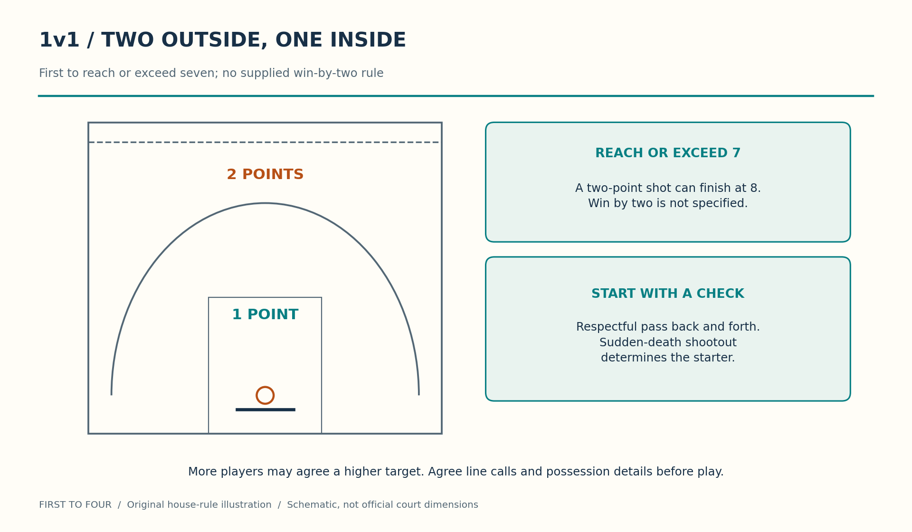
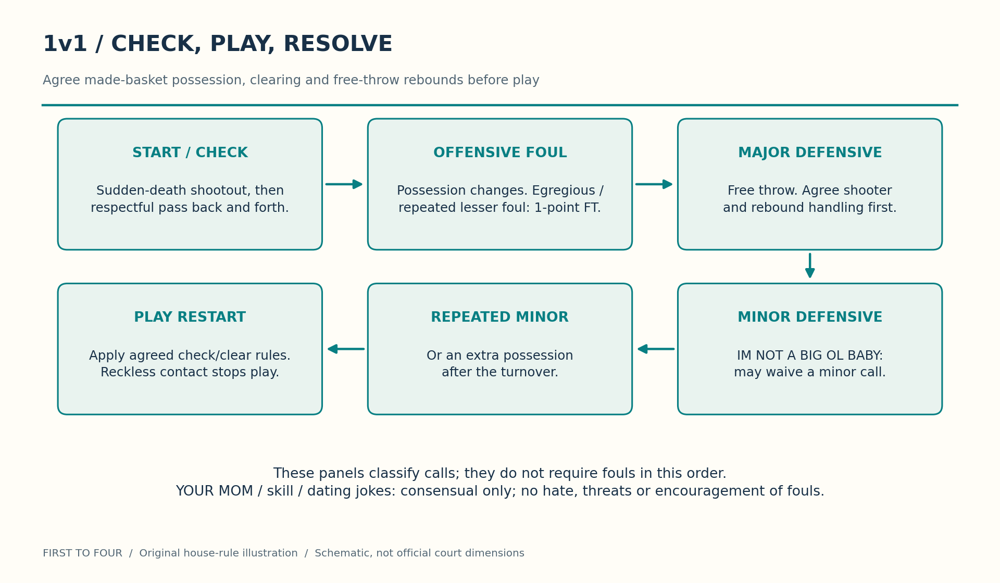
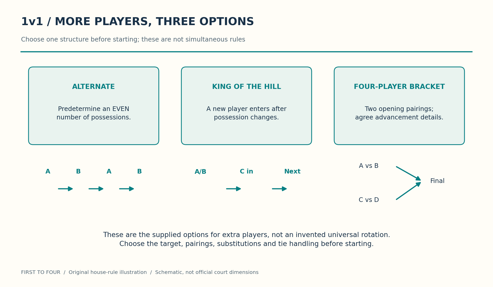
6 BACKBOARD
The setup must contact the backboard. Catch the ball before it touches the ground while you are airborne, and release the shot before landing. The idea is to simulate being covered immediately after a rebound; no defender needs to make contact for this simulation.
Each player has three attempts per location, using the same progression: near basket, free throw, three-point line, near logo edge, logo center, half court, far logo center, and so on at agreed court markers.
Advance when all players make the shot at the current location.
Offer unlimited mercy for the vibes, with the receiver honorably free to reject it if they feel they have lost. The most-mercy recipient usually buys dinner for the loser(s) in the Shooting-style context; it is not strict and is only a voluntary, mutually agreed opt-in.
If both players fail, agree mutual mercies in any amount, typically two. They are not automatic and two is not a cap.
HIGH JUMP RULES. After both players are out of mercies, compare the attempts taken at the previous successful shot: the player who made that shot in the fewest attempts wins. This is called HIGH JUMP RULES because both creators competed in high jump; the countback is their owner-supplied house rule. If the previous-shot attempt counts tie, the supplied rules give no further resolution: agree a tie procedure before play. They also do not specify a countback when there is no previous successful shot; agree that case before play.
6.1 Observe contact, catch and release separately
A board touch does not by itself complete the shot. The observer must be able to see the ball’s setup contact, the airborne catch before ground contact, the release before landing, and the final make. Agree disputed-attempt handling and how mercy attempts enter the countback before play. A safe landing area takes priority over preserving an attempt. Do not import Rim’s BALL exception into Backboard: that exception is supplied for Rim, not specified here.
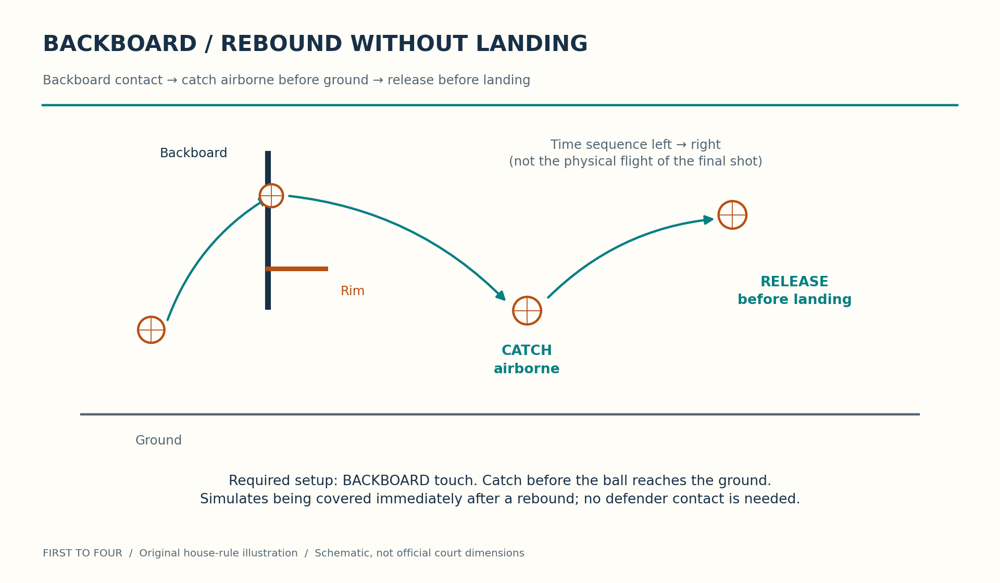
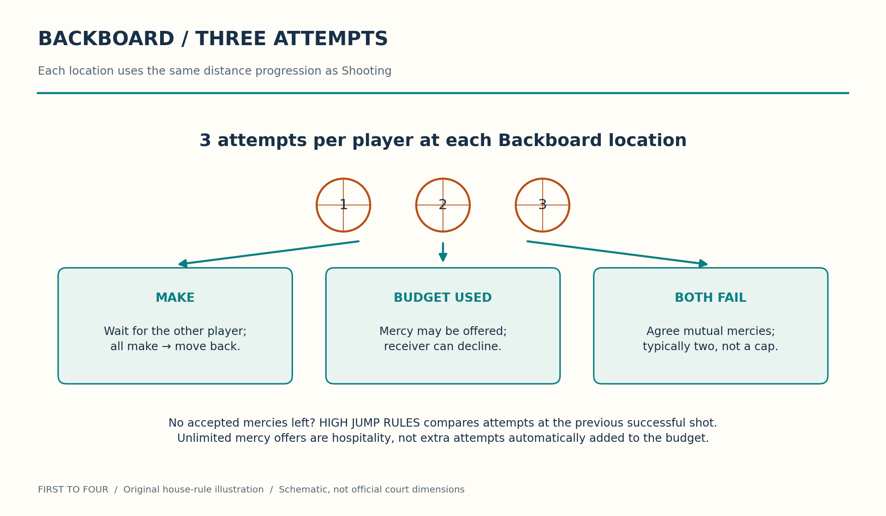
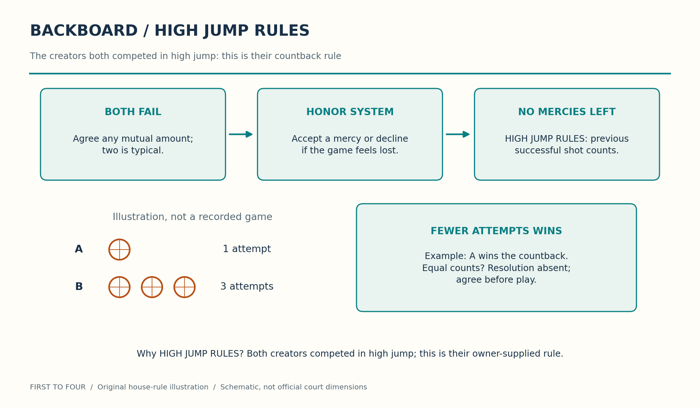
7 3 POINT
Make five three-point shots in sequence: the corner at \(0^\circ\), the \(45^\circ\) wing, the \(90^\circ\) top, the \(135^\circ\) wing and the \(180^\circ\) corner, then make HALF COURT. Either corner may be the starting corner; reverse the order when starting at the other end of the arc. These angles name spots, not surveyed court coordinates. The supplied rule gives no fixed attempt budget for the ordinary sequence.
Players may help return balls, but may not interfere with shots. Assistance is not required; otherwise each player self-rebounds. Keep return lanes clear and do not involve an unconsenting bystander as a rebounder.
Mercy lets the otherwise-losing player make their next shots back-to-back, without a miss, all the way through half court. If they make the whole chain, “reset the game where it previously ended.” That wording is preserved: it does not uniquely identify which players’ locations, progress or clock state are restored. Decide the exact reset state before play. A miss does not earn that reset; do not replace the house comeback with an invented bonus-point system.
Recording completion time is optional. The owner’s impression is that timing often makes it feel like fewer shots are needed; this is an impression, not a demonstrated statistical effect. Rebounding help, attempt counts and losing times were not standardized in the supplied history.
7.1 Finishing and timing: an explicit interpretation
Treating the first finisher as the winner is an operational interpretation of the race and otherwise-losing-player mercy, not an explicit standalone winner clause in the source. Confirm it before play, including simultaneous finishes, when a mercy may be offered, clock start/stop conditions and the exact reset state. Missing timing is not zero seconds. A quicker recorded winner time does not prove fewer attempts, better shooting skill or a fair comparison of sessions.
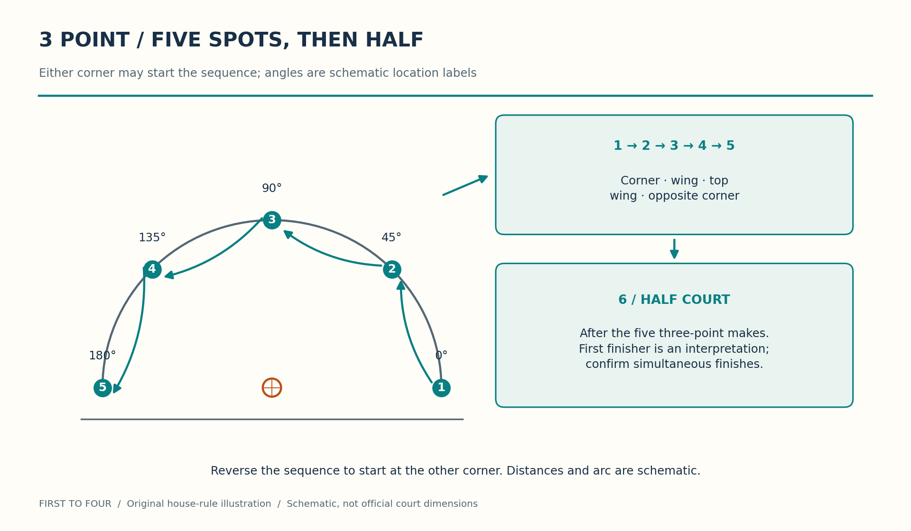
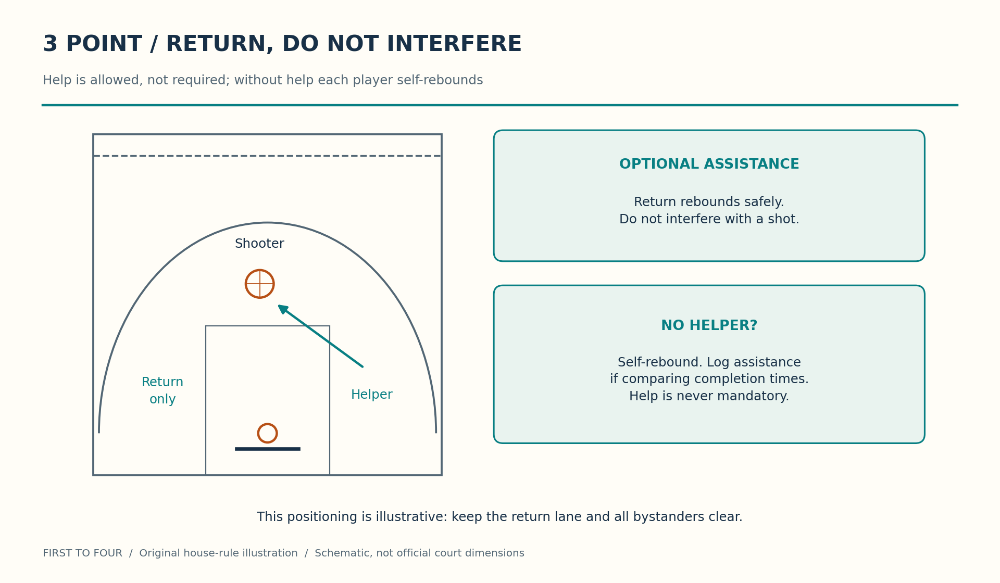
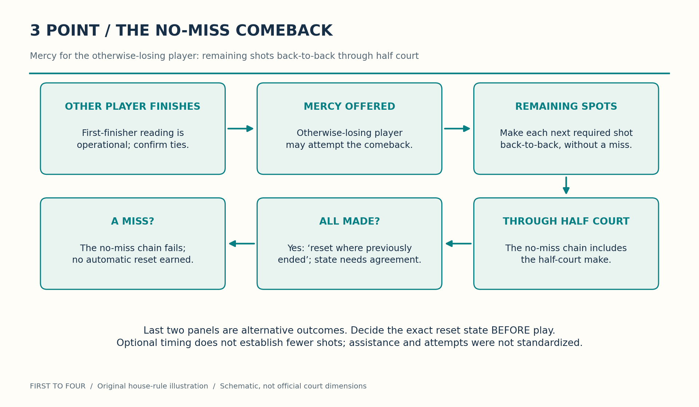
8 RIM
The setup must touch the RIM; additional backboard contact is allowed. Catch the ball while airborne before it reaches the ground, then release the shot before landing. The required rim touch distinguishes this challenge from the board-only setup requirement in Backboard.
Each player has four attempts per location using the same progression: near basket, free throw, three-point line, near logo edge, logo center, half court, far logo center, and so on at agreed markers.
If the setup goes in, call BALL. It does not immediately cost a miss. However, three consecutive BALLs count as one missed attempt: the WE DON’T HAVE ALL DAY, GET WORSE and SKILL ISSUE clauses. This is setup accounting, not an instruction to count the setup make as a successful airborne follow-up shot.
Advance when everyone has made the shot at the current location.
Offer unlimited mercies for the vibes. The receiver honorably rejects one if they feel they have lost. The most-mercy recipient usually buys dinner for the loser(s), in the Shooting-style context, not as a strict obligation; any dinner remains voluntary and mutually agreed opt-in.
When both players fail, mutual mercies can be agreed in any amount, typically two; the typical amount is neither a cap nor an automatic award.
HIGH JUMP RULES. After both players are out of mercies, compare the attempts taken at the previous successful shot: the player who made that shot in the fewest attempts wins. This is called HIGH JUMP RULES because both creators competed in high jump; the countback is their owner-supplied house rule. If the previous-shot attempt counts tie, the supplied rules give no further resolution: agree a tie procedure before play. They also do not specify a countback when there is no previous successful shot; agree that case before play.
8.1 Do not hide a BALL accounting assumption
The supplied consecutive-BALL clause does not fully specify streak-reset handling, including what happens after a qualifying non-BALL setup or a charged triple. Agree that handling before play. Resetting on a qualifying non-BALL is a possible operational clarification, not a verified source rule, and is not silently imposed here. Likewise, agree mercy/countback accounting. Write down BALL events separately from the four-attempt budget so a scorer does not charge every made setup as a miss or overlook a three-consecutive-BALL charge.
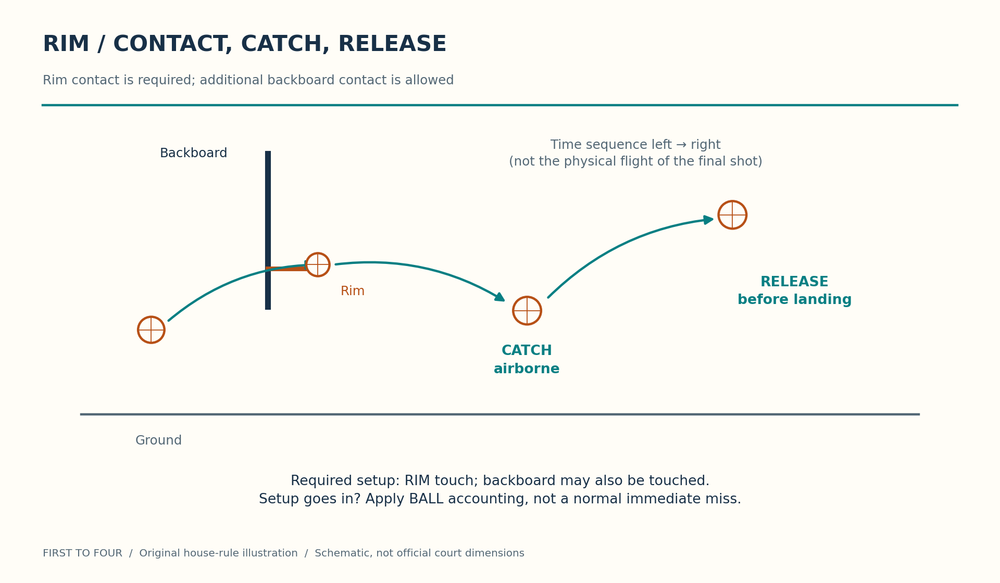
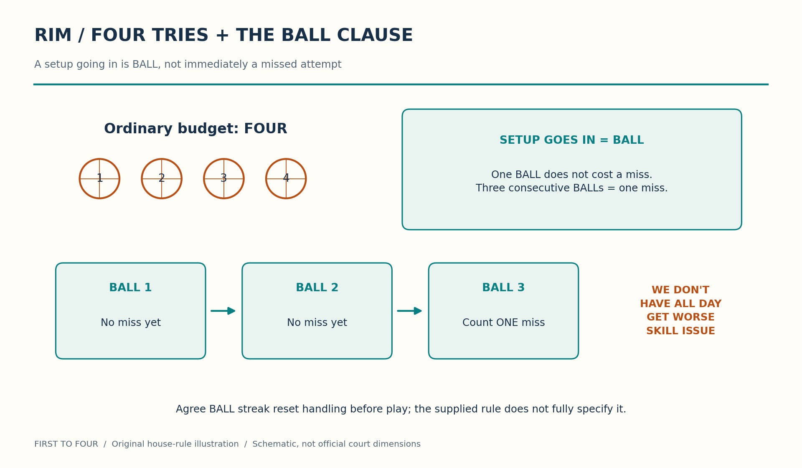
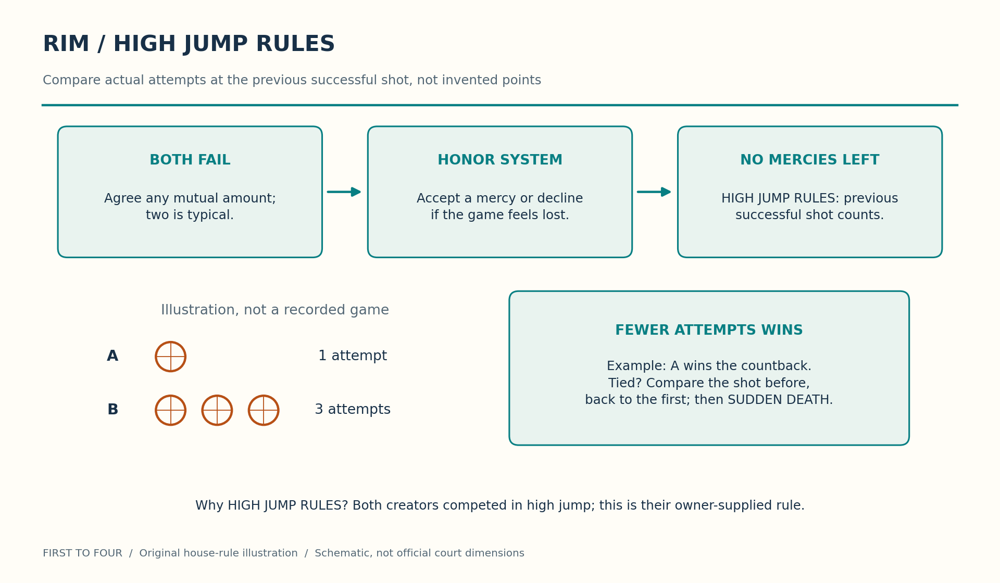
9 BUMP
Use rock-paper-scissors to determine the first player, or who gets to pick the first player; agree which interpretation applies before starting. Going first is a disadvantage “unless Liam” is the owner’s joke, not an objective finding from the data.
Fix the starting shooting location with the least-skilled player in mind. Agreed different locations may be used for a SKILL ISSUE; this requires agreement rather than a unilateral handicap.
The first player shoots first. Obviously.
If the second player is tricked by a fakeout and shoots too early, they must retrieve their ball and return to the start: SILLY BOY YOU SHOULDVE BEEN PAYING ATTENTION. The consequence is lost time, not contact or humiliation.
If the second player makes before the first player, the first player is eliminated.
After the initial shot, a rebound may be shot from anywhere, subject to clear-court safety and no intrusion on bystanders.
If the first player makes before the second, they pass their ball to the next queued player, who becomes the second player. With only two remaining, the roles swap. Agree queue administration after elimination before play.
The legal interference allowance is ball-to-ball only: no hands or body on an opponent’s ball. In a completely clear court, examples are using your held ball to collide with the other ball; throwing your ball to block the other ball’s flight, at which Owen is “annoyingly good” in the owner joke; using a ball up through the net to reject a basket, while watching for fakeouts; or redirecting a bad rebound using your ball. These are conditional examples, not exemptions from safety. Do not target or hit any people, including those eliminated, resting, or on their phone. Pause for bystanders, protect safe landing/retrieval space and skip any tactic that cannot stay safely ball-to-ball.
Careless or reckless human contact stops play for a safety check and appropriate first aid, with medical help when needed. The credit-card-for-24-hours Amazon bit is a joke that is not a real rule. No credit cards, passwords or financial access are requested, surrendered, shared or used as a penalty. Only resume when the court is safe and the participants agree.
9.1 A knockout explanation is not a five-point scoring model
The above is the supplied single-knockout house explanation. The historical log contains Bump results such as “5-1” and “5-0”, but the point accumulation and mapping from knockouts to those strings are pending clarification. Do not invent first-to-five, five lives, five races or a score orientation from that notation. Agree simultaneous baskets, remaining-player victory administration, and post-elimination queue details before play. The diagrams explain the chase, not an unsupported scoring engine.
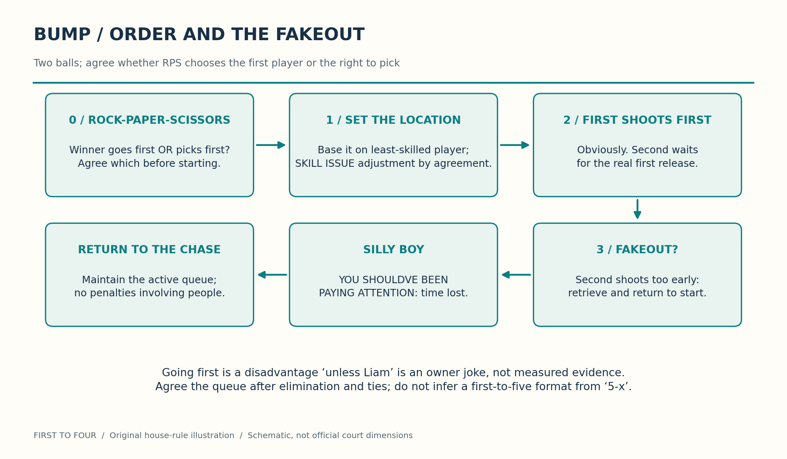
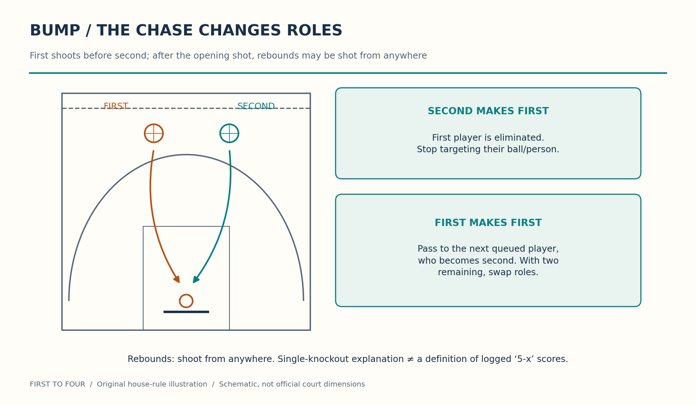
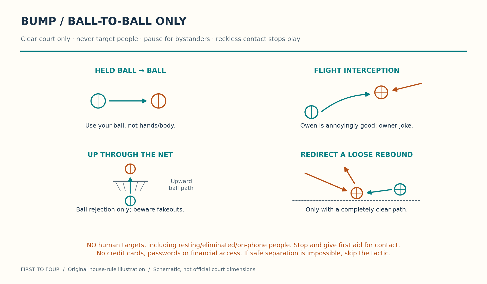
10 Two to six players and the multiplayer extension
Two-player play uses the normal first-to-four finish. For three to six players, the house extension considers the most wins after seven games if nobody has already reached four. A maximum of six belongs in the playing group; for a larger gathering, use brackets with two or three players per round. Agree how challenge winners, advancement and the next picker work for the chosen structure. This is an extension, not evidence that the two-player data engine supports it.
If players tie after seven, for example a \(3\)–\(3\)–\(1\) split, the supplied house rule uses games won by losing players to break the tie. The selection mechanism is unspecified. Agree which eligible game is selected, which players take part, who chooses it, how its outcome resolves the tie and what to do if it does not. Do not claim the sentence gives a unique result or a complete exact algorithm. The example is hypothetical, not an additional recorded series.
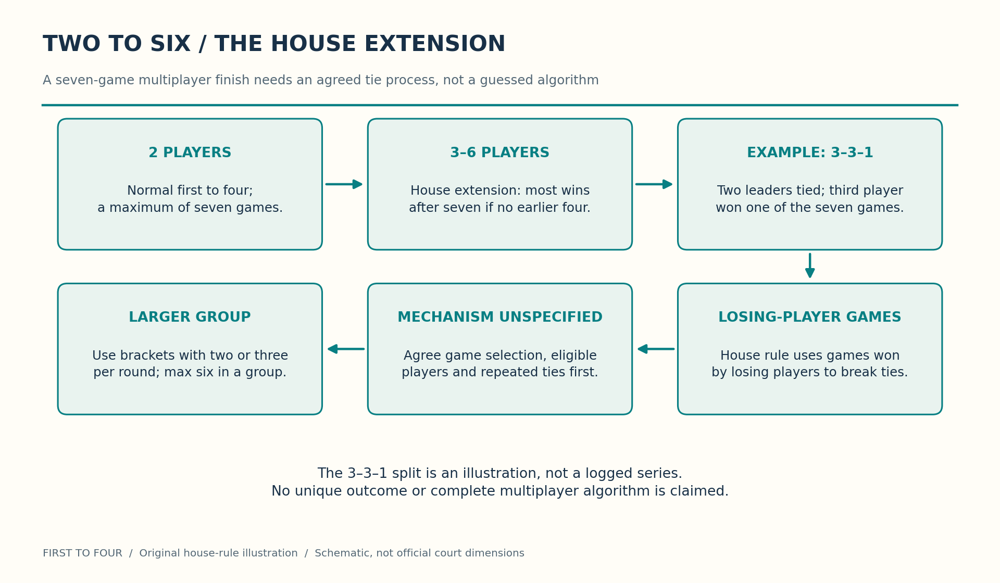
11 Source notes, diagram credits and the next recording
Mechanics source. Owner-supplied complete house rules accompanying this project, transcribed on 27 September 2026. Playful named clauses are retained; the safety/consent override is an explicit editorial condition, not a claim that dangerous or financial-access jokes were safe original instructions.
Record source. The public-shortname log
records/basketball/series.json; validation and descriptive analysis bysite_content/basketball.py. Winner codes follow listed play order; picker decisions, mercy counts and dinner obligations were not recorded. No private contact records, raw video or unpublished personal data are included.Figures. All 23 figures in this rules article are original house-rule illustrations generated by
site_content/sports_diagrams.py. They are not official court plans, imported broadcast footage, or evidence of a particular player’s skill. PNGs are the active article assets; SVG companions are editable vector exports. A separate creator-pitch article adds the episode diagram.
For a fresh, consented recording session, log actual picker decisions, precise locations, attempts, accepted mercies, BALL events, rim height, timing method, rebounding assistance and disputed calls as they occur. Leave unobserved values missing. Keep recording and publication consent distinct, retain footage privately with an agreed deletion plan, and publish only approved aggregate CSV or other explicitly approved public data. This document and its diagram builder do not upload records, publish raw recordings, infer personal obligations or perform outreach. Agree the unresolved mechanics before collecting new data.